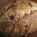

Raisin bread
Tea breads, half-way between bread and a cake are popular for tea, as they keep well and can be made in advance. Soda bread is a good substitute for yeast bread in an emergency, and can be made shortly before it is required.

Instructions
I worked on 9 strands at a time, letting them relax before rolling and stretching it a bit further. In all, it took us about an hour to finish. We braided the stands then coiled them around a stainless steel bowl that we covered in tinfoil.
Bread Basket Chef baked them in a hot oven until the dough set, then removed thce metal bowls and inverted the basket to dry out the inside. When she removed them from the oven, the outside was browned but the inside was still a bit soft, so we finished drying them at home. I'm not all that excited about this product: while it's edible and interesting to admire, I much prefer something I can eat.
Ingredients
- 5ml bicarbonate of soda
- 2.5ml cream of tartar
- 275g plain flour
- 100g butter
- 2.5ml ground ginger
- 5ml ground mace
- 2.5ml ground all spice